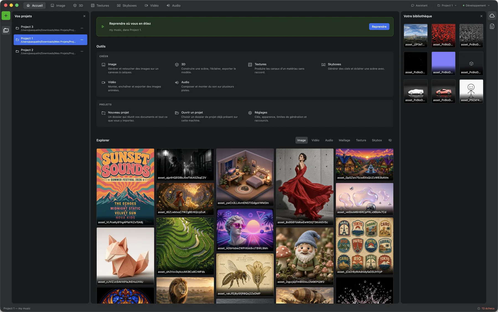
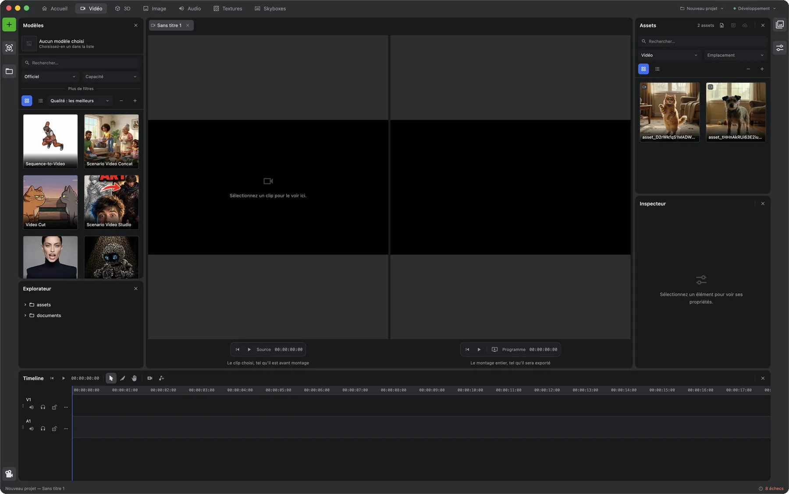
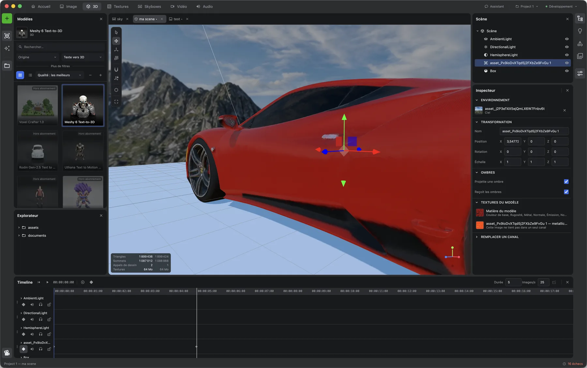
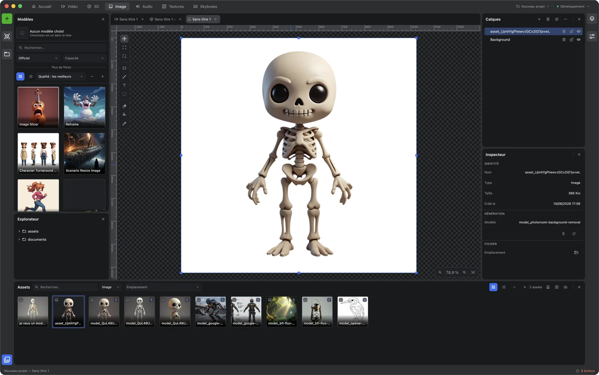
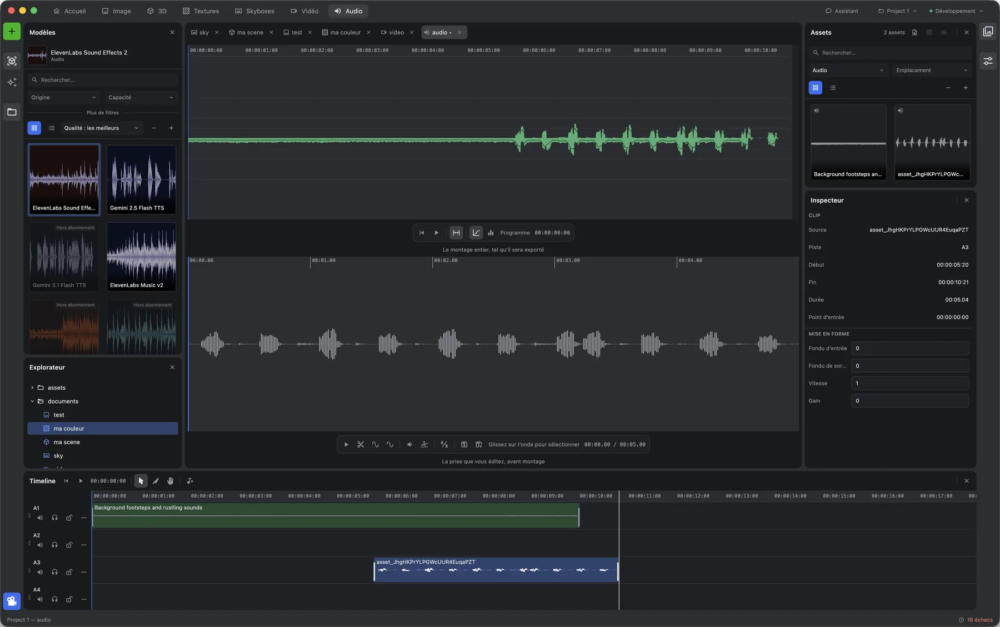
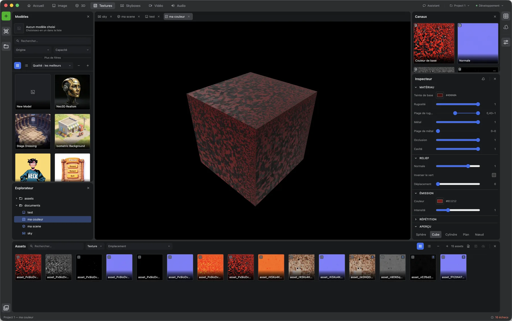
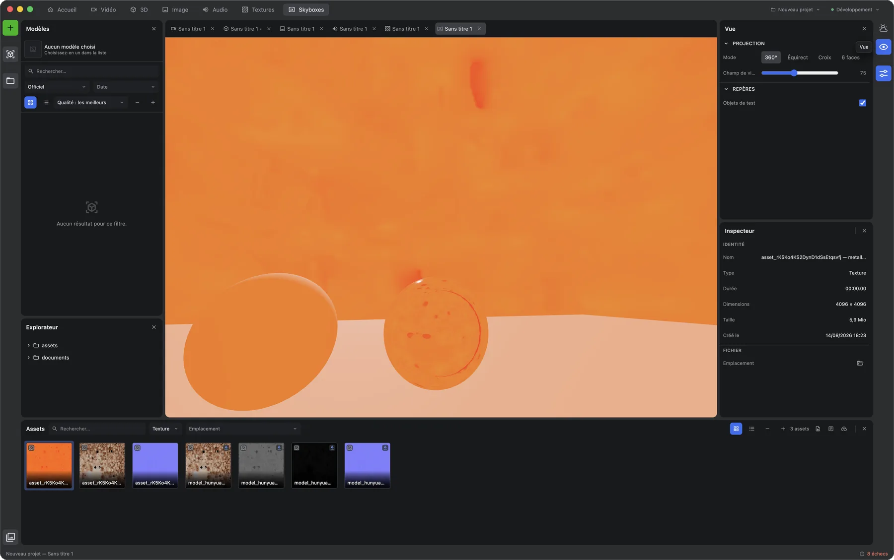

Six modes, une disposition
Panneaux ancrables et détachables, onglets, disposition retenue par atelier entre deux sessions.
Application de bureau · projet indépendant, non affilié à Scenario Labs
Six ateliers de génération dans une seule fenêtre. Panneaux ancrables, timeline au timecode, inspecteur, bibliothèque sur disque : les outils d'un logiciel de production, appliqués aux modèles génératifs.
Accueil · le point de départ
Ouvrez un dossier, il devient un projet : documents, assets importés, générations. Tout reste sur le disque, dans des formats que d'autres logiciels lisent déjà — OpenRaster, OpenTimelineIO, glTF, MaterialX —, exploré depuis l'application et versionné par git sans quitter la fenêtre.

Continuer à défiler
Atelier · sortie .mp4
Deux moniteurs, une timeline multipiste, et des modèles qui produisent les plans.

Atelier · sortie .glb
Une maille générée, posée dans une scène qu'on éclaire, qu'on anime et qu'on exporte.

Atelier · sortie .png
Un canevas à calques, où la génération est un outil parmi les autres.

Atelier · sortie .wav
Composer et monter du son sur plusieurs pistes, dans la même fenêtre que le reste.

Atelier · sortie .png ×4
Une matière, pas une image : chaque canal est produit puis vérifié séparément.

Atelier · sortie .hdr
Un ciel qui sert de décor et, en même temps, de source de lumière.

Sous le capot
Les paramètres d'un modèle lui sont propres et changent sans prévenir. Ils sont donc lus à l'exécution et transformés en champs : un modèle nouveau apparaît avec ses réglages, sans une ligne de code de plus.
Panneaux ancrables et détachables, onglets, disposition retenue par atelier entre deux sessions.
Détacher un panneau détruit son contexte graphique. Le moteur se rebâtit à l'identique — ce qui donne l'annulation et la sauvegarde par la même occasion.
Un projet est un dossier lisible sans l'application, exploré par un vrai navigateur de fichiers et suivi par git depuis le studio — branches, versions, conflits. Import, export et catalogue partagent le même index, qui retrouve ses fichiers même déplacés hors de l'application.
Le schéma déclaré par le modèle devient une liste de champs, rendue telle quelle. Un type inconnu retombe en saisie brute plutôt que de faire disparaître le formulaire.
Toute génération est asynchrone. Un seul composant suit l'avancement, borne le nombre de tâches simultanées et temporise en cas de refus du service.
Clé et secret sont chiffrés par le magasin du système. La fenêtre demande « suis-je connecté ? », jamais « quelle est ma clé ? ».
Un moteur de reconnaissance vocale tourne dans un processus séparé, sur votre ordinateur. Une fois le modèle rapatrié, rien de ce qui est dit ne part sur le réseau.
222 actions en 14 familles, des documents aux assets, de la scène au montage, du fichier au dépôt git : un agent fait ce que fait l'interface, par les mêmes chemins.
Vignettes, formes d'onde, mailles lourdes et encodage vidéo partent sur le processeur graphique, dans des fils de calcul ou dans un processus à part.
Documentation & démonstration
Installation
Cinq installeurs, produits par la même chaîne d'intégration à chaque version. En attendant la première version publique, le dépôt se clone et se lance en trois commandes.
Apple Silicon · .dmg
Version à venirIntel · .dmg
Version à venirx64 · .exe
Version à venirx86_64 · .AppImage
Version à venirx86_64 · .deb
Version à venirL'installeur est régi par les conditions d'utilisation ; le code source, par la licence PolyForm Noncommercial 1.0.0. L'application ne donne accès à aucun service de génération : elle utilise la clé d'API que vous fournissez, sous votre compte et à vos frais.
git clone https://github.com/pasquelin/IAStudio.git
pnpm install
pnpm start